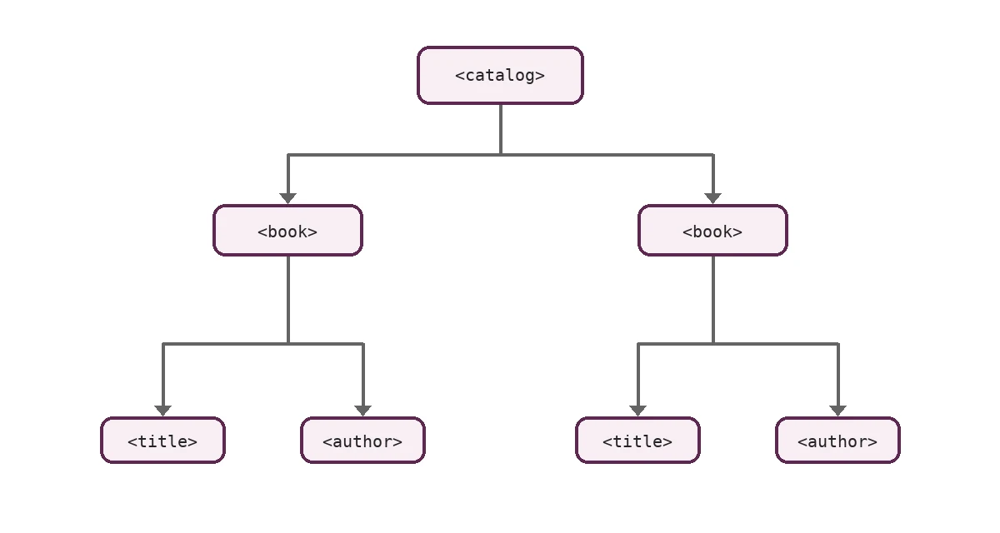

XML в современной Web-разработке
XML (Extensible Markup Language) — расширяемый язык разметки для представления структурированных данных в текстовом, человекочитаемом и машиночитаемом виде.
Главная идея: XML не задаёт фиксированный набор тегов. Разработчик или стандарт определяет собственный словарь элементов и правил их использования.
Где встречается XML
SVG
Векторная графика в браузере описывается XML-элементами: фигурами, группами, путями и атрибутами.
RSS и Atom
Форматы синдикации используют XML для передачи заголовков, ссылок, дат и описаний публикаций.
Office-форматы
Многие современные офисные форматы представляют собой архивы с XML-файлами, описывающими структуру документа.
Пример простого XML
<?xml version="1.0" encoding="UTF-8"?>
<book id="b1">
<title>Введение в XML</title>
<author>Иван Петров</author>
<year>2026</year>
</book>
Что изучаем на сайте
- Синтаксис и понятие well-formed документа.
- DTD и XSD как средства задания структуры.
- Пространства имён XML.
- Популярные XML-словари.
- XPath и XSLT.
- Сравнение XML и JSON.